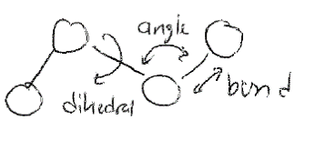

Fluctuations and an Introduction to Molecular Simulation#
Additional Readings for the Enthusiast#
Ch. 3.6, Frenkel and Smit Chapter 3
Topics in this lecture#
Fluctuations
Two simulation methods
Model components
Announcements#
Pset 3 due Tuesday
Exam 1 next Thursday; practice problems and solutions online
Fluctuations and thermodynamic response functions#
In the last lecture, we introdued the Ising model as a simple model that incorporates interactions between molecules. We showed that it is very challenging to handle interactions analytically because we cannot factorize the partition funtion, and instead used mean-field theory to approximate the interaction between each spin and its neighbors as equivalent to the average interaction between spins in the entire system. Mean-field theory is a convenient approximation that can simplify systems sufficiently to allow for analytical approximations. However, by assuming that the local properties of each region of a system can be approximated by the average properties of the entire system, mean-field theory neglects the local fluctuations throughout a system (or fluctuations in system properties as a function of time) that can be important. Hence, we will close our study of statistical mechanics by discussing the importance of fluctuations and how these can be connected to macroscopic quantities, thus providing information neglected by mean-field theory.
We begin by clarifying what is meant by fluctuations in this context. Consider the energy, \(E_j\), of a system described by the canonical ensemble (fixed \(NVT\)). The energy can vary between many different equivalent microstates of the canonical ensemble with different values of the energy \(E_j\), and we can define an ensemble average value of \(\langle E \rangle = \sum_j p_j E_j\). We can think of fluctuations in the energy in two different ways. First, we can imagine examining the system as a function of time, and periodically recording the instantaneous energy, \(E(t)\). At each snapshot of the system, \(E(t) = E_j\), in other words, the system by definition will be in some microstate such that its energy at time \(t\) will have a value equal to \(E_j\). According to the ergodic hypothesis, over sufficiently long times \(\int E(t) dt = \langle E \rangle\) - that is, all microstates will be visited according to their Boltzmann-weighted probabilities and we can observe the ensemble average value of \(E\). Fluctuations by this definition then refer to the expected temporal variation in \(E(t)\) as the system evolves in time. However, because ergodicity establishes the equivalence of temporal measurements and ensemble averages, we can also think of fluctuations in the energy as a measure of the variance in the energy in the ensemble of microstates - i.e. simply a statistical quantity which reflects the distribution of energies accessible to a system. The key point here is that temporal fluctuations in the quantity are exactly equal to the statistical fluctuations in that quantity over long enough observation times such that ergodicity establishes the equivalence of the temporal average and ensemble average.
 {width=”100%”}
{width=”100%”}
Having established the definition of fluctuations, why do we care? Let us first consider fluctuations of the energy in the canonical ensemble. Taking the statistical definition of fluctuations, we can write the ensemble-average variance, \(\langle ( \delta E)^2 \rangle\), in the canonical ensemble as:
Here we have simply rewritten the ensemble-averaged square fluctuation (i.e., the ensemble-averaged variance) in terms of ensemble averages of the energy itself. We can now use equations from the canonical ensemble to substitute for these terms.
We next recognize that from the definition of the partition function, \(Z = \sum_j e^{-\beta E_j}\), we get \(\frac{\partial Z}{\partial \beta} = -\sum_j E_j e^{-\beta E_j}\). Therefore the above expression becomes:
Note the use of the product rule to simplify the first line to the second line. We recall from Lecture 3 that \(\langle E \rangle = -\left ( \frac{\partial \ln Z}{\partial \beta} \right )_{N, V}\) to get:
In the last line, we recognize that \(\left ( \frac{\partial \langle E \rangle}{\partial T} \right )_{N, V}\) is the heat capacity at constant volume, an experimentally measurable material constant. This relationship is remarkable - it shows that the fluctuation (either with respect to time or with respect to the variation in the statistical ensemble) of energy in a system at fixed \(NVT\) is related to the rate at which energy in that system changes due to changes in the temperature. We call \(C_V\) a thermodynamic response function; that is, it shows the response of a system (i.e. change in energy) at equilibrium to a change in a parameter (i.e. the temperature). The relation above shows that microscopic fluctuations in the energy are a measure of the thermodynamic response of a system.
This relationship is strictly derived only at equilibrium, since everything we have done so far in statistical mechanics is at equilibrium; it turns out that similar relationships between statistical fluctuations and the response of a system also occur in non-equilibrium processes, leading to the so-called fluctuation-dissipation relationship, but that is outside of the scope of this lecture.
The relationship between fluctuations and a thermodynamic response illustrates a new means of calculating the heat capacity of the material. Without knowledge of this relationship, the simplest way to calculate the heat capacity would be to perform multiple experiments at different temperatures, measure the corresponding system energy, and equate \(C_V\) to the slope of the resulting line. Instead, Eq. [heat_capacity]{reference-type=”ref” reference=”heat_capacity”} shows that we could take a single system at a fixed temperature and instead measure the fluctuations of the energy over time to obtain \(C_V\) in a single experiment. Such measurements will be possible using computer simulations as we will discuss in future lectures. We could also derive the fluctuations of other quantities, such as the density, and connect these to other materials parameters as a general means of computing response functions from equilibrium fluctuations.
 {width=”90%”}
{width=”90%”}
Size of fluctuations and the equivalence of ensembles#
The next question we will address how large fluctuations actually are relative to the average energy of the system. If fluctuations are much smaller than the average energy of the system, then the system energy will appear approximately constant. To determine the relative size of fluctuations, we recognize that the heat capacity, \(C_V\), is extensive and scales with the number of particles of the system, and thus is of order \(N\) (this was explicitly shown for an ideal gas). The energy, \(E\), is also extensive and scales with \(N\) (also shown for an ideal gas). The ratio of fluctuations to the average energy is then:
This scaling analysis indicates that if \(N\) is a large number (e.g. on the order of \(10^{23}\) particles), then the ratio of fluctuations to the average energy approaches zero and the energy of the system is effectively constant. Thus, in the large \(N\) limit the average energy calculated from the canonical ensemble will be identical to the average energy of a microcanonical ensemble because energy fluctuations are negligible - and this is exactly the limit in which classical thermodynamics is valid.
To illustrate this point in just a bit more detail, we can write the equation for the canonical partition function by summing over all energy levels, and including the explicit degeneracy of energy level \(\nu\):
In the large \(N\) limit, we just showed that only a single value of \(E_\nu\), the ensemble average value, is meaningful, as fluctuations away from this value are unlikely. Thus, the degeneracy \(\Omega(N,V,\langle E \rangle)\) is significantly larger than any other term in the summation, and we can write the partition function instead as:
Taking the logarithm of this expression and equating to the Helmholtz free energy yields:
We can compare this last expression to the thermodynamic definition of the Helmholtz free energy, \(F = E - TS\). Therefore, we get that \(S = k_B \ln \Omega(N,V,\langle E \rangle)\), the Boltzmann entropy used to define the microcanonical ensemble, and we see that the two ensembles make equivalent predictions for the Helmholtz free energy. Similar measures of equivalency could be performed in the thermodynamic limit for other ensembles as well.
There are thus four important conclusions to draw from our study of fluctuations: 1) that in the thermodynamic limit, fluctuations are negligible, and hence we can discuss single values of thermodynamic variables as being equivalent to ensemble averages; 2) that in the thermodynamic limit all ensembles are equivalent, and hence we can use any ensemble that is mathematically convenient to relate molecular properties to macroscopic observables; 3) that microscopic fluctuations are proportional to a response function, both in equilibrium and in non-equilibrium processes; and 4) fluctuations are measurable properties of a system that can be used to inform experimental measurements (e.g. in light scattering).
Summary of other topics#
We have now finished our overview of statistical mechanics and will transition into an alternative approach to calculating the statistical properties of many-body, interacting systems via computer simulations. However, it is useful to emphasize that we have only scratched the surface of modern statistical mechanics, and that there many other topics of importance. Briefly, here are some topics of interest that we have not discussed:
Kinetic theory of gases (although we will touch on this in the next unit)
Topics in non-equilibrium statistical mechanics, such as linear response theory
Renormalization group approaches to phase transitions
Correlation functions and order parameters
Landau-Ginsburg models for phase transitions
Statistical mechanics of surfaces
If you’re interested in these topics, I am happy to point you toward relevant textbooks.
Introduction: two main simulation methods#
In the previous lecture, we performed a first analysis of a many-body, interacting system; that is, a system in which particle interactions are included in the potential energy function of the system. We also saw that for even a very simple model, the two-dimensional Ising model, analytically calculating system properties becomes immensely complex when interactions are included. For most systems of interest, such as condensed matter systems, analytical solutions are impossible.
How, then, can we leverage the strength of statistical mechanics - that is, relating microscopic features of a system to macroscopic thermodynamic properties via the partition function - if the partition function cannot be analytically obtained? One solution is to simulate the systems of interest to sample system configurations according to the correct underlying probability distribution rooted in the findings from statistical mechanics. These simulations, which we will refer to as molecular simulations to distinguish from alternative simulation methodologies that focus on computing quantum mechanical properties, will be the focus of the next few lectures.
In this class, we will focus on two major types of simulation methods: Monte Carlo simulations, abbreviated as MC simulations, and Molecular Dynamics simulations, abbreviated as MD simulations. MC and MD simulations aim to calculate the same properties of a system, but the two methods differ in their approach. The two methods can be compared by recalling the ergodic hypothesis, which states that the time-average value of a system property \(Y\) over a sufficiently long timescale \(\tau\) is equivalent to the ensemble-average value of that same property (from Lecture 2):
In MD simulations, we explicitly simulate the time-evolution of particle positions using a modified version of Newton’s equations of motion in which forces are calculated, used to compute particle velocities, and then particle positions are determined by integrating the equation of motion with a discrete, short time interval (i.e. the simulation timestep). This approach effectively treats the computer simulation as an experiment and extracts time-average simulation properties. Hence, the MD approach models the left-hand side of the above equation. The challenge with MD simulations is often ensuring that \(\tau\) is sufficiently long to sample states from the observed system; in other words, ensuring that a system is both in equilibrium and ergodic is a major challenge of MD. From a practical standpoint, the MD equations of motion require the calculation of forces, which requires the potential energy function of the system to be everywhere continuous and differentiable.
In MC simulations, we take an approach consistent with the right-hand side of the equation above and attempt to directly sample configurations from the equilibrium ensemble, weighted according to their probability \(p_i\). MC simulations thus relate more directly to the tools of statistical mechanics, specifically because the probability of a particular configuration can be determined based on the corresponding statistical ensemble (i.e., a Boltzmann weight is associated with each state in the canonical ensemble). Sampling from an equilibrium ensemble then requires calculating these probabilities, which in practice requires an expression for the energy of each configuration. Unlike MD simulations, there is no attempt made in conventional MC simulations to explicitly represent time and there is no need to calculate forces, so the underlying potential energy surface can be discontinuous if desired. Similarly, there does not have to be a physical path between states sampled as long as the energy is well-defined for each state. These strengths of MC simulations are also weaknesses, however, as inherently time-dependent properties (such as a diffusion coefficient) cannot be accurately measured.
We will learn more details about each of these algorithms in the next few lectures. First, however, we will discuss some initial topics regarding how a physical system is actually modeled in a simulation representation.
Model description of a simulation system#
Regardless of whether we sample a simulation observable using a MC or MD method, we first need to understand how to model a physical system. This choice is system specific and depends on many factors, including the length scale over which we expect interesting behavior, the importance of thermal motions, etc. Here, we will summarize various ways to represent a physical system and comment on examples in the literature for which they are commonly used.
Particle-based representations#
The most common simulation model consists of a set of \(N\) particles, where each particle represents either a single atom or some collection of atoms. A single configuration of the system is then specified by by the coordinates \(\textbf{r}^N\) and momenta \(\textbf{p}^N\) of all \(N\) particles. In this notation, \(\textbf{r}^N\) represents a \(3N\)-dimensional vector of all particle coordinates in 3D; the bold font indicates a vector. Particles are typically also associated with chemical properties such as a set of masses, charges, and interaction parameters.
There are three common ways of representing molecules in particle-based simulations. In all-atom simulations, each atom is represented by a particle. In united-atom simulations, all aliphatic carbon atoms and their bonded hydrogen atoms are combined into a single particle, while all remaining atoms are represented as individual particles. In coarse-grained simulations, multiple atoms are combined into a single particle, with the number of atoms corresponding to each particle defined by as the extent of coarse-graining. While clearly representing every atom in a system yields the most detailed information, the trade-off is that including additional particles increases the computational expense of the simulation. Hence, the goal of coarse-graining is to remove explicit descriptions of particles that contribute minimally to the behavior of the system (often solvent molecules, for example) in favor of reducing the computational expense of calculations, which in turn allows for longer simulations (e.g. a longer observation time \(\tau\) in a MD simulation, or more states sampled in a MC simulation). Devising methods to accurately remove atoms from a simulation while retaining the same behavior as at a more detailed length scale is the primary challenge in coarse-graining.
 {width=”100%”}
{width=”100%”}
Example systems typically modeled at each level of resolution include:
All-atom - single solutes in solution (e.g. ions in water); small proteins; nanomaterials
United-atom - lipids; self-assembled monolayers; surfactants
Coarse-grained - polymers; multicomponent cell membranes; liquid crystals, macromolecular complexes
Lattice models#
Another means of representing a system is by projecting all coordinates onto a discrete set of lattice points, as opposed to a continuous set of coordinates; we solved lattice models analytically for the Langmuir isotherm and the Ising model in the Statistical Mechanics unit. A lattice model is an inherently (highly) coarse-grained system, and is typically used for systems for which MD simulations are inappropriate due to the difficulty in sampling a system ergodically. Due to the discretization of lattice positions, lattice models are typically used with MC sampling since forces may be not be easily obtained.
Beyond the MC simulations studied in this class, lattice models are often used with field-based simulation techniques, such as self-consistent field theory, or with techniques in which the system is treated using equations from continuum mechanics (finite element analysis) or fluid dynamics (Lattice Boltzmann methods). These techniques are beyond the scope of this class. Examples of systems in which lattice models may be used with MC simulations include:
Protein folding (i.e. the HP model)
Phase behavior of polymer blends / mixtures
Phase behavior of lipid/protein mixtures
Hard condensed phase materials (i.e. vacancy diffusion)
Interactions between particles#
Having defined various ways of representing a physical system and modeling the positions of particles, we now can define how interactions are defined in a molecular system. Interactions are defined in terms of a potential energy function that is a function of particle coordinates (along with other possible system parameters, such as the presence of an external field).
First, we will consider potentials in typical atomistic or coarse-grained, particle-based simulations, as these potentials are common for both MC and MD simulations of distinct molecules. Interactions can largely be divided into two classes: bonded interactions, which include interactions meant to represent covalent bonds, bond angles, and torsional angles; and non-bonded interactions, which describe interactions between atoms/particles that are not bonded together, and generally reflect common intermolecular forces. In most such systems, non-bonded interactions are assumed to be pairwise, meaning that they only involve pairs of particles, as opposed to many-body interactions that could involve the interactions between a set of particles. Below, we summarize several typical potentials that would be used primarily in atomistic or coarse-grained MD simulations that fall into each of these categories.
Bonded potentials#
{width=”40%”}
Bonds in real systems emerge from quantum mechanics, and hence any simulation representation that neglects electron degrees of freedom is an approximation to a covalent bond. Most atomic simulations include potentials to restrict bond lengths, bond angles, and dihedral angles, with the typical implementation of these potentials being a harmonic spring. Since the specifics of this approach will vary significantly on a case-by-case basis we will not discuss bonded potentials in more detail other than recognizing their existence.
Non-bonded potentials#
The most common non-bonded interaction in molecular simulations is the Lennard-Jones potential, or the 12-6 potential, which is typically written as:
Here, \(r_{ij}\) is the (scalar) distance between particle \(i\) and \(j\), \(\epsilon_{ij}\) is a characteristic interaction energy and \(\sigma_{ij}\) is a characteristic interaction length scale describing the approximate diameter of a particle. The Lennard-Jones potential is broken into an attractive interaction that scales with \(r^{-6}\) and a repulsive potential that scales with \(r^{-12}\). The attractive potential represents three contributions to typical van der Waals interactions that are all attractive and scale with \(r^{-6}\): London dispersion forces, which are related to interactions between instantaneous dipoles that arise from quantum mechanical considerations; dipole-induced dipole interactions, which are related to attractions between dipoles on a molecule and induced dipoles that arise from the polarizibility of a different molecule; and Keesom interactions, which emerge from the orientation dependence of dipole-dipole interactions. In general, we do not attempt to divide the LJ potential into contributions from these three distinct interactions, but rather empirically identify parameters for \(\epsilon\) and \(\sigma\) which capture all three effects. The repulsive potential represents Pauli exclusion, which acts to ensure that particle wave functions do not overlap. There is no single scaling relation for Pauli exclusion other than that it must be a strong repulsive force, so for computational convenience \(r^{-12}\) is chosen since the calculated \(r^{-6}\) term can be simply squared.
In addition to van der Waals interactions, it is typical to associate charges (or partial charges, to account for the unequal distribution of electrons throughout a molecule that leads to dipoles) to atoms or particles in a system. These charges interact via a long-range Coulombic potential:
where \(\epsilon_0\) is the permittivity of free space, \(\epsilon_r\) is the relative dielectric constant (1 in vacuum, 2-4 in oil, 80 in water), and \(q_i\) is the charge on particle \(i\). In practice, Coulombic interactions are difficult to calculate in simulations due to periodic boundary conditions because they decay slowly and the minimum image convention is a severe underestimate of the total magnitude of electrostatic interactions. Instead, advanced techniques, such as Ewald summations, have been derived handle their calculation. Such methods are outside of the scope of this discussion but are discussed in the Frenkel and Smit textbook if you would like to review them on your own.
 {width=”100%”}
{width=”100%”}
Many other non-bonded interactions are possible and in common use, but these represent the two most common functional forms used in most atomistic simulations.
Interactions in MC simulations#
The interactions described above are all described by potentials that are continuous and differentiable, and thus can be used in molecular dynamics simulations. However, Monte Carlo simulations can use any potential energy function regardless of whether it is differentiable, expanding the repertoire of possible interactions. Some examples of interactions used in MC simulations are noted here. The first is a hard-sphere interaction, where particles are strictly not allowed to overlap (akin to an infinitely strong repulsive potential part of the Lennard-Jones interaction):
Another example is the interaction between nearest-neighbors used in the Ising model, which can be easily represented in MC simulations:
In principle, many other possible interactions could be defined; here we only included a subset that are commonly found in the simulation literature and map directly to many experimental problems.